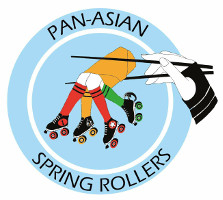

East Asian Derby's new Spring (Rollers)!
If Spring is the time when new growth happens, how appropriate it is that East Asian Roller Derby is just now bursting into life and catalysed by the Pan-Asian Spring Rollers!

Readers may remember our coverage of Japan's second-ever Roller Derby Tournament, the Tomodachi Derby Tournament, in Okinawa earlier this year. The Pan-Asian Spring Rollers were one of two "exhibition" teams founded to attend - comprising of skaters from Beijing Roller Derby, Shanghai Roller Derby, Hong Kong Roller Derby (the three Chinese leagues), and Bangkok Roller Derby for Thailand.
Originally, the plan was for them to simply exist for the one tournament - a chance for those 4 leagues to share costs and make a more competitive roster together - but the Spring Rollers have quickly become something more.
Only a few weeks ago, Shanghai Roller Derby held their first ever public game, enabled by the existence of the Pan-Asian Spring Rollers as a team to play against them.
In a few weeks' time, Hong Kong Roller Derby also hold their first public game, ever, once again enabled by the Pan-Asian Spring Rollers.
The Pan-Asian Spring Rollers are represented by reps from each of their source teams, and we spoke to their Hong Kong Rep, Willow Whips (who also Captained PASR at Tomodachi), and their Bangkok Rep, Jean Claude van Slam about the new aims of PASR.
JC:"We all got on amazingly well [at the Tomodachi Derby Tournament], some of us meeting for the first time just hours before our first game. I think we all felt sad to depart afterwards partly for the awesome experience but also as new found friends. It was after I chatted with members of Okinawa Roller Derby that the idea came to try and maintain the PASRs.
Beijing and Bangkok had talked before about the importance of maintaining the relationship between our teams as the key to growing this sport in Asia and so this seemed like the perfect opportunity to harness that enthusiasm and drive this new partnership into something long standing."
WW: "We have been working on a set of regulations and things like that, so the aim is that each team will try and host one event (a training session or a scrim) per year. Bangkok is planning on hosting a boot camp and scrimmage at the beginning of October, which will be open to anyone affiliated with Pan-Asian Roller Derby"
JC: For BRD, it's given members a new motivation for the sport, knowing that all that effort each week of learning and practicing drills has a chance to be put into real action, in addition to attracting new people to our team.
One of the issues for BRD being out further than the rest, is the travel costs. However, one of PASRs conditions for being a team member is to host at least one event per year so this should make for plenty of opportunities to choose from.
We hope that this will also help us to build recognition of the sport in Thailand and encourage more people to join. Just having those opportunities that has already made such a difference [to the team]"
WW: "The [long term] aim is to head back to Japan next year for the [next Japanese] tournament, now that we have played together a few times we will hopefully be even more badass!"
JC:"I hope that with the extended reach out to lone players in parts of Asia who don't currently have a home team, the PASR team might encourage new leagues to start in other Asian countries. That's yet to be seen but fingers crossed!!"
Willow: "If any teams want to join they just have to be in the region and put forward one representative from the team. If any individual skaters are in the area they are also welcome to sign up and train and play with us!"
The next fixture in this new East Asian derby calendar is against Hong Kong Roller Derby on the 17th June.

Hong Kong Roller Derby, which started out when founder Buffy SlayHers moved to Hong Kong from the USA in 2013, was inspired by an article listing "Top 5 Reasons HK Needs a Roller Derby Team" after realising that her new destination had no derby at all. As Buffy put it, "So I decided the best way to start was to "recruit " my friend, and roommate at the time, Glenda by having a roomie night and watching, yes, you guessed it, 'Whip It!' Now, before you start hating, and as cliche as it I, I think all of us love 'Whip It!' whether we have accepted the facts or not."
The team has had a bumpy ride - despite a huge amount of effort, the original Hong Kong Roller Derby collapsed in 2014, "I'm sure you all know the common difficulties many, if not all derby players face, but being in HK, made it that much harder. From difficulty in securing practice venues, to people moving away, and misunderstandings, our team fell apart and remained that way for over a year and a half."
Reformed now, for another go since 2016, the new Hong Kong Roller Derby has managed to grow to a healthy 19 skaters! Buffy has drawn the following lesson from the two experiences: "It still seems like a dream, but [HKRD] is finally happening and has opened my eyes to why we had failed before. It all comes down to the people and the passion. Without community and support, we are nothing. But now our team is a family, and we realize we won't always agree but we will always have each others' backs and remember that in the end, we all want the same thing."
HKRD's A Team, the Yau Ma Titties, have put a huge amount of effort into organising this first bout (thanks to the previous derby experience of their founder, it's been easier than it might have been).
You can follow the event here: https://www.facebook.com/events/1240708282693458/
If you want to join the Pan-Asian Spring Rollers as another Asian team, you can find their Facebook page here: https://www.facebook.com/Pan-Asian-Spring-Rollers-448887468791803/ which also links to all of their member leagues, including Hong Kong.